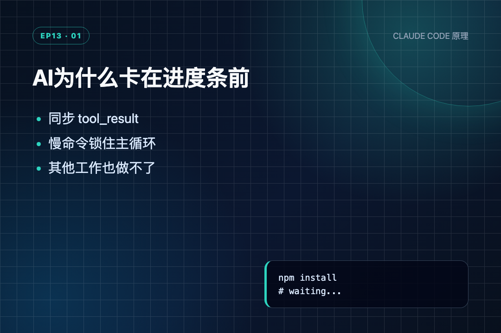
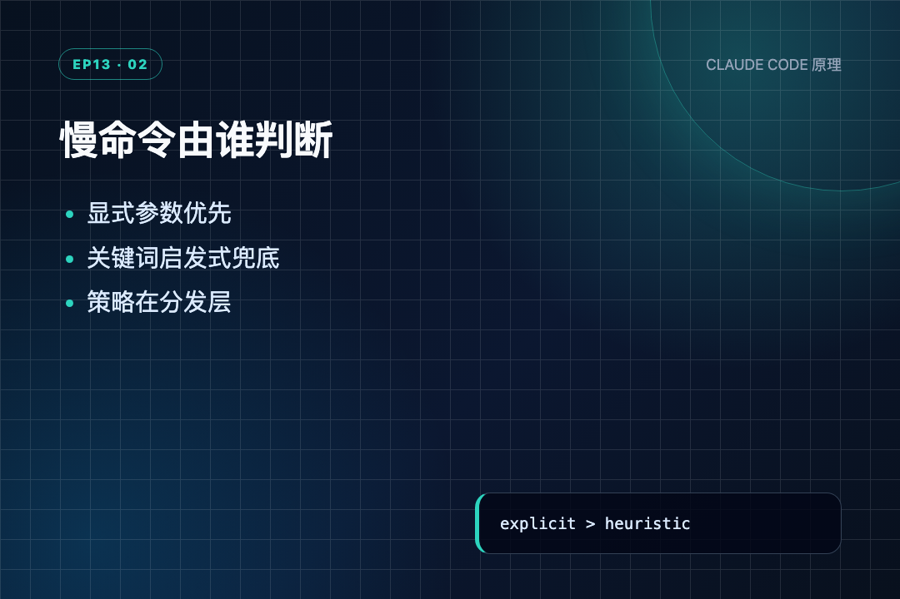
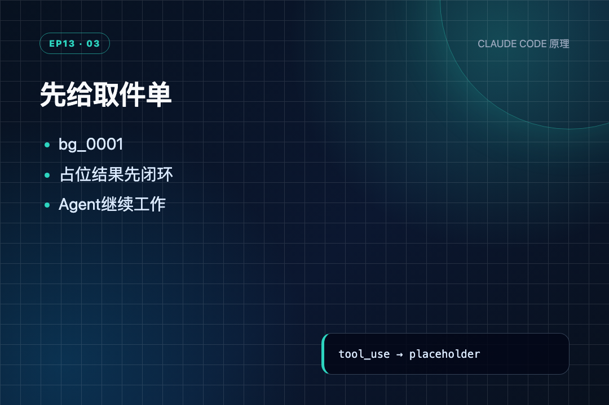
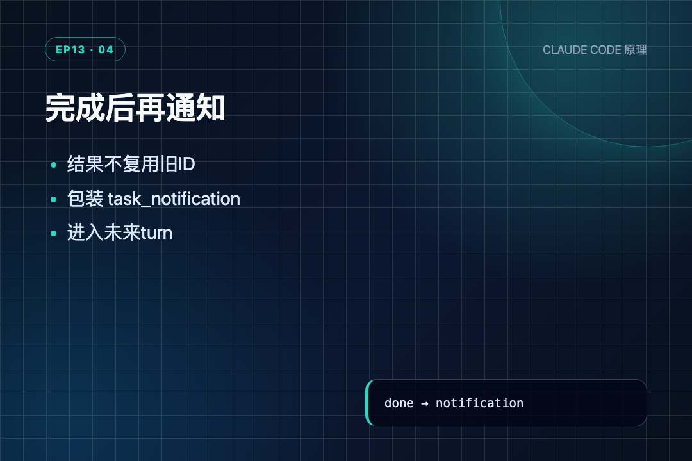
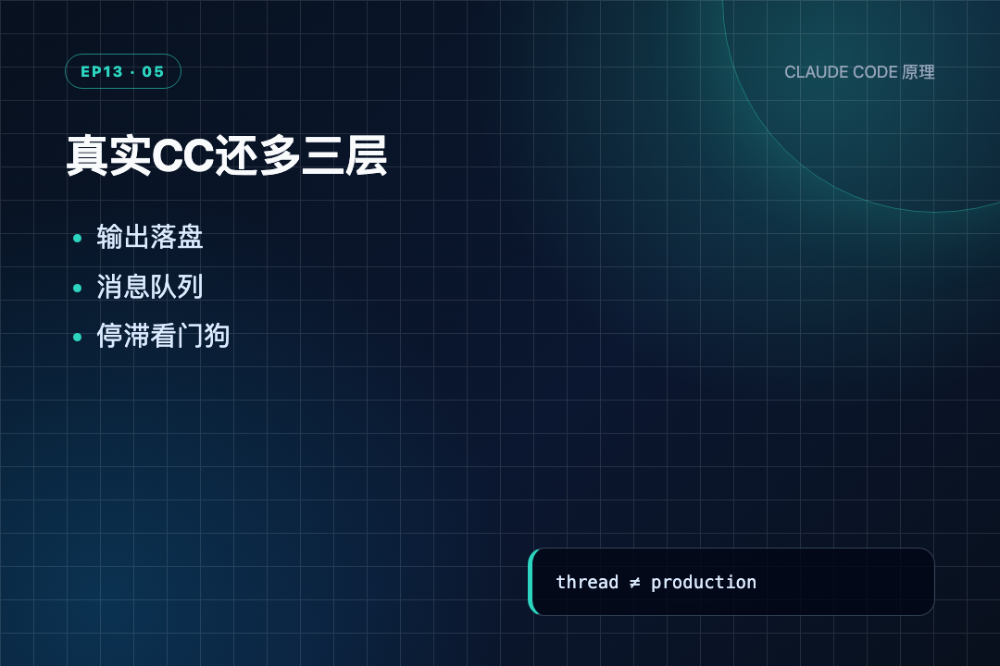

昨晚跑全量测试，终端半天没动静。我去倒了杯水，回来时它还在同一行转圈。人会趁这几分钟处理别的事，Agent 却只能守着工具结果，整个循环一起停住。
上一节 s12 刚把零散待办升级成有依赖、能持久化的任务图。任务先做谁、后做谁已经说清楚了，可一旦某个节点要安装依赖、构建镜像或跑全量测试，任务图照样堵在这条慢命令上。
我是郑同学，继续顺着 learn-claude-code 往下读。s13 没给模型换一个更聪明的大脑，而是改了模型外面的 Python 程序：慢活先交出去，主循环拿到回执后继续走。
后台任务的关键不是“另开一条线程”，而是先闭合旧工具调用，再把完成结果作为一条新消息送回来。
● ● ●
s12 的工具调用是同步的。模型发出 bash，run_bash() 里面直接执行 subprocess.run()；命令不结束，函数不返回，下一次 LLM 调用也就不会发生。
defrun_bash(command: str, run_in_background: bool = False) -> str: # run_in_background is handled by agent_loop dispatch, not here try: r = subprocess.run(command, shell=True, cwd=WORKDIR, capture_output=True, text=True, timeout=120) out = (r.stdout + r.stderr).strip() return out[:50000] if out else "(no output)" except subprocess.TimeoutExpired: return "Error: Timeout (120s)"
逐行看：
run_in_background 虽然出现在参数里，函数内部并不处理它。同步还是后台，不由 bash handler 决定。subprocess.run() 会一直等子进程结束，最多等 120 秒。return，所以同步路径天然会卡住当前工具轮次。s13 把选择放到了 agent_loop 的工具分发位置。同一个 bash handler 不改，只是在调用它之前决定：当前线程直接执行，还是交给后台线程。
s13 增加的是执行方式，不是第 9 个工具。

AI为什么卡在进度条前
● ● ●
bash 的 schema 多了一个布尔参数：
{"name": "bash", "description": "Run a shell command.", "input_schema": {"type": "object", "properties": { "command": {"type": "string"}, "run_in_background": {"type": "boolean"}}, "required": ["command"]}}
模型可以显式传 run_in_background=true。如果它没传，教学版再用关键词做兜底：
defis_slow_operation(tool_name: str, tool_input: dict) -> bool: """Fallback heuristic: commands likely to take > 30s.""" if tool_name != "bash": return False cmd = tool_input.get("command", "").lower() slow_keywords = ["install", "build", "test", "deploy", "compile", "docker build", "pip install", "npm install", "cargo build", "pytest", "make"] return any(kw in cmd for kw in slow_keywords) defshould_run_background(tool_name: str, tool_input: dict) -> bool: """Model explicit request takes priority; fallback to heuristic.""" if tool_input.get("run_in_background"): return True return is_slow_operation(tool_name, tool_input)
is_slow_operation() 先排除非 bash 工具，再把命令转成小写，最后检查是否包含慢操作关键词。read_file 和 write_file 永远不会因为这套关键词自动进后台。
should_run_background() 的第一条路是模型显式选择；没有得到真值才进入关键词判断。这里有个源码细节：传 false 并不能强制前台执行，因为代码仍会继续走启发式。这个参数只表达“明确进后台”，没有表达“明确不要进后台”。
关键词判断也只是教学兜底。npm run test:unit 会命中，命令文本里偶然出现 test 也可能误判。它并没有真的测量命令耗时。

慢命令由谁判断
● ● ●
后台任务的状态只有两份内存字典和一把锁：
_bg_counter = 0 background_tasks: dict[str, dict] = {} # bg_id → {tool_use_id, command, status} background_results: dict[str, str] = {} # bg_id → output background_lock = threading.Lock()
background_tasks 记任务是谁、跑什么、现在跑到哪。background_results 单独放真正输出。background_lock 让主线程和 worker 修改字典时互不踩踏。真正的分发函数是 start_background_task()：
defstart_background_task(block) -> str: """Run tool in a daemon thread. Returns background task ID.""" global _bg_counter _bg_counter += 1 bg_id = f"bg_{_bg_counter:04d}" cmd = block.input.get("command", block.name) defworker(): result = execute_tool(block) with background_lock: background_tasks[bg_id]["status"] = "completed" background_results[bg_id] = result with background_lock: background_tasks[bg_id] = { "tool_use_id": block.id, "command": cmd, "status": "running", } thread = threading.Thread(target=worker, daemon=True) thread.start() print(f" \033[33m[background] dispatched {bg_id}: {cmd[:40]}\033[0m") return bg_id
按执行顺序读：
_bg_counter 生成 bg_0001 这种本进程 ID，模型后面靠它识别是哪项工作完成。worker() 复用原来的 execute_tool(block)，不是另写一套 bash。status="running"，然后才 thread.start()。先登记再开跑，避免 worker 太快完成时查不到自己的任务。completed，并写入输出。daemon=True 表示主进程退出时，这条线程也跟着结束；它不是独立常驻服务。这里我读到一个很实用的点：线程只是执行工具，任务 ID、状态和结果才构成可追踪的后台任务。只有线程，没有这些记录，主循环根本不知道谁完成了。
● ● ●
一次工具请求必须对应一次工具结果。人话讲，就是模型说“请执行这条命令”，程序必须回一张单据，不能把这个请求悬着，也不能后来回两次。
s13 在分发后立刻构造占位结果：
if should_run_background(block.name, block.input): bg_id = start_background_task(block) results.append({"type": "tool_result", "tool_use_id": block.id, "content": f"[Background task {bg_id} started] " f"Command: {block.input.get('command', '')}. " f"Result will be available when complete."}) else: output = execute_tool(block) print(str(output)[:300]) results.append({"type": "tool_result", "tool_use_id": block.id, "content": output})
后台分支没有返回真正输出，只返回 bg_id 和“稍后可取”。这张占位结果把原来的 tool_use 当场闭合，于是模型下一轮可以继续读文件、改配置或处理其他任务。
真正输出不能再冒充第二个 tool_result。 原请求已经回过一次了；后台完成属于后来发生的新事件，所以要换一种消息形式。

先给取件单
● ● ●
collect_background_results() 只收已经完成的任务：
defcollect_background_results() -> list[str]: """Collect completed background results as task_notification messages.""" with background_lock: ready_ids = [bid for bid, task in background_tasks.items() if task["status"] == "completed"] notifications = [] for bg_id in ready_ids: with background_lock: task = background_tasks.pop(bg_id) output = background_results.pop(bg_id, "") summary = output[:200] if len(output) > 200 else output notifications.append( f"<task_notification>\n" f" <task_id>{bg_id}</task_id>\n" f" <status>completed</status>\n" f" <command>{task['command']}</command>\n" f" <summary>{summary}</summary>\n" f"</task_notification>") print(f" \033[32m[background done] {bg_id}: " f"{task['command'][:40]} ({len(output)} chars)\033[0m") return notifications
第一遍加锁只找 completed 的 ID；第二遍逐个 pop 任务和结果。pop 表示通知只交付一次，下轮不会重复告诉模型同一件事。
输出最多取前 200 字放进
最后，通知和当前轮的普通工具结果合并进一条 user message：
user_content = [] bg_notifications = collect_background_results() if bg_notifications: for notif in bg_notifications: user_content.append({"type": "text", "text": notif}) print(f" \033[32m[inject] {len(bg_notifications)} background " f"notification(s)\033[0m") user_content.extend(results) messages.append({"role": "user", "content": user_content})
这里所谓“注入”，没有神秘操作，就是把完成通知追加到 messages，下一轮模型便能看到。通知先放，当前工具结果后放，二者仍属于同一条 user 消息。

完成后再通知
● ● ●
分开看是判断、线程、字典和通知；连起来才是 s13 的完整执行顺序：
模型发出 bash(run_in_background=true)
↓
should_run_background() 返回 True
↓
start_background_task()
先写 background_tasks[bg_id] = running
再启动 daemon worker
↓
立刻返回占位 tool_result
原 tool_use 到这里已经完成一问一答
↓
模型继续调用 read_file 等快工具
↓
worker: running → completed，并保存 output
↓
collect_background_results() 取走任务和结果
↓
<task_notification> 作为新文本加入 messages
↓
下一轮模型看到“后台任务完成”
一前一后其实有两次回流：第一次回“任务已开始”，第二次回“任务已完成”。 第一次保证工具调用格式完整，第二次表达时间上新发生的事实。
这也解释了为什么不能简单地把 subprocess.run() 塞进线程就完事。没有占位结果，模型会等；没有完成通知，模型永远拿不到后台输出。
● ● ●
光看代码没感觉，跑一下。
先给 Agent 一个慢命令——模拟 npm install，但用 sleep 代替，免得真等几分钟：
s13 >> Run a slow install in background; keep working > bash [background] dispatched bg_0001: python -c "import time; time.sleep(.25);
第一行是探针的输入标签。第二行 > bash 说明模型要求执行 bash。第三行最关键——命令还没跑完，bg_0001 就已经登记好了。start_background_task() 在锁内写了 status=running，开了线程，然后立刻返回。命令被截断显示是因为源码里只取前 40 个字符。
紧接着，主循环没有等它：
tool_result: [Background task bg_0001 started] > read_file {"name":"demo","scripts":{"test":"pytest"}}
看这个顺序：bash 还在后台跑，Agent 已经在读文件了。第一行是占位回执——[Background task bg_0001 started] 不是真实输出，只是一张"取件单"。有了它，模型知道任务已受理，可以继续干别的。第二行 > read_file 就是 Agent 趁等待时间做的另一件事。
等后台命令跑完了，结果怎么回来？
[background done] bg_0001: python -c "import time; time.sleep(.25); (16 chars) [inject] 1 background notification(s) <task_notification> <task_id>bg_0001</task_id> <status>completed</status> <command>python -c "import time; time.sleep(.25); print('install complete')"</command> <summary>install complete</summary> </task_notification>
[background done] 是 collect_background_results() 打印的。它发现 bg_0001 的状态已经从 running 变成了 completed，就把任务记录和输出一起 pop 出来。pop 意味着这条通知只交付一次，下一轮不会重复。
下面的 tool_result——原来的 bash 调用早就用占位回执闭合了。这是一条新消息，告诉模型"之前那个后台任务完成了"。
install complete 几个字，因为源码里截了前 200 字。
一句话总结这个 Demo：命令还没跑完，Agent 已经在干别的；等命令跑完了，结果变成一条新消息送回来。这就是 s13 的全部价值。
● ● ●
课程 README 的 给出了文件与函数级对照，来源包括 query.ts、services/toolUseSummary/toolUseSummaryGenerator.ts、LocalShellTask.tsx、messageQueueManager.ts 和 utils/task/framework.ts。
真实 CC 的“后台”也不是简单多开线程。它把子进程输出、任务类型、通知队列、优先级和 UI 摘要接成了一套生命周期。

真实CC还多三层
● ● ●
读实际代码，有四个边界不能被“异步执行”四个字遮过去：
daemon=True。主进程退出，后台线程会一起停。它解决当前会话内不阻塞，不提供跨进程执行。background_tasks 和 background_results 都在内存里。崩溃或重启后，任务 ID、状态和输出全部丢失。agent_loop 继续处理工具结果时调用 collect_background_results()。如果模型拿到占位结果后直接结束，完成事件不会主动拉起新一轮。任务虽然完成，通知可能要等下次循环才被交付。教学版证明了“先回执、后通知”的最小机制；真实产品还必须补主动唤醒、持久化输出和任务控制。
● ● ●
读完 s13，我最大的感受是：异步不是“快”，而是等待期间不把整条工作流锁死。
慢命令从当前线程移走只是第一步；真正让 Agent 能继续工作的，是这三件事同时成立：先登记任务、立刻回复占位结果、完成后追加新通知。
感兴趣可以 clone 源码，直接对照 start_background_task() 和 collect_background_results() 跑一遍上面的状态变化。
下一节 s14 会顺着这里再推一步：现在后台任务仍要有人先发起。如果没人输入消息，Agent 能不能到点自己开工？ 这就需要独立的 Cron Scheduler。
源码地址：https://github.com/shareAI-lab/learn-claude-code